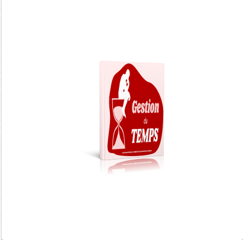
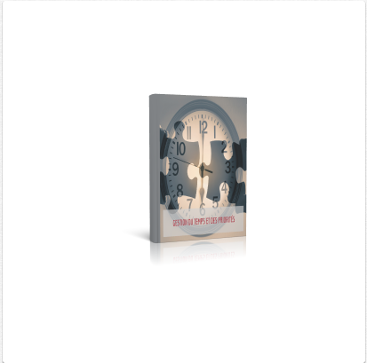

📚 Ton temps = ton impact. Voici des lectures pour le valoriser.

Les Lois de la Gestion du Temps
Apprends à équilibrer vie pro, perso et spirituelle.
📖 Télécharger

Gérer son temps, honorer sa mission
Réflexion sur l’importance du temps comme ressource divine.
📖 Télécharger